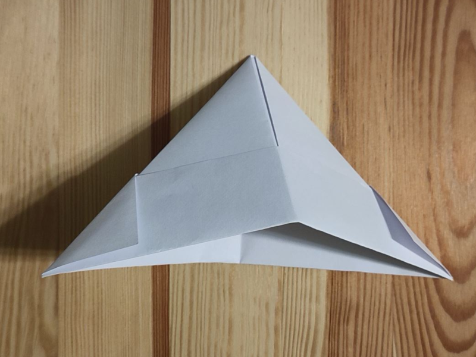
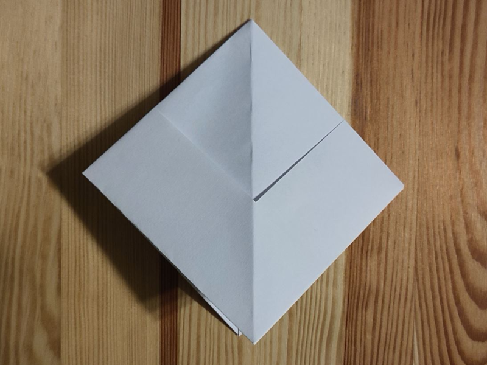
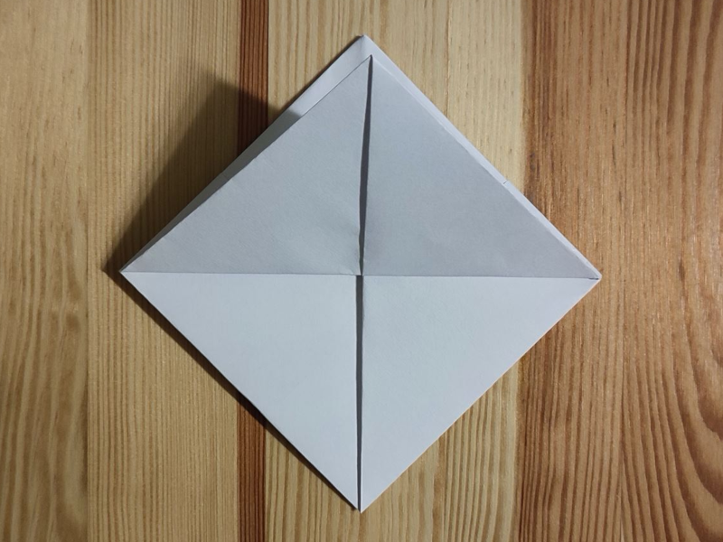
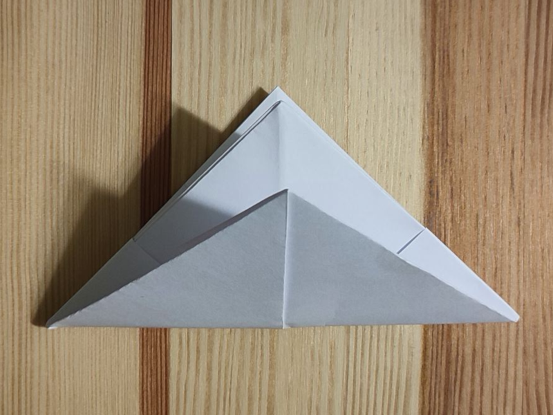
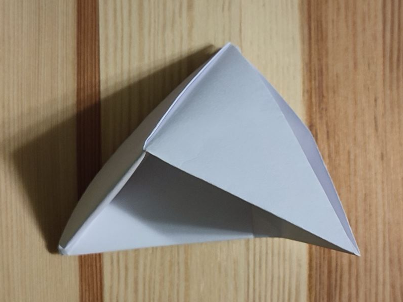
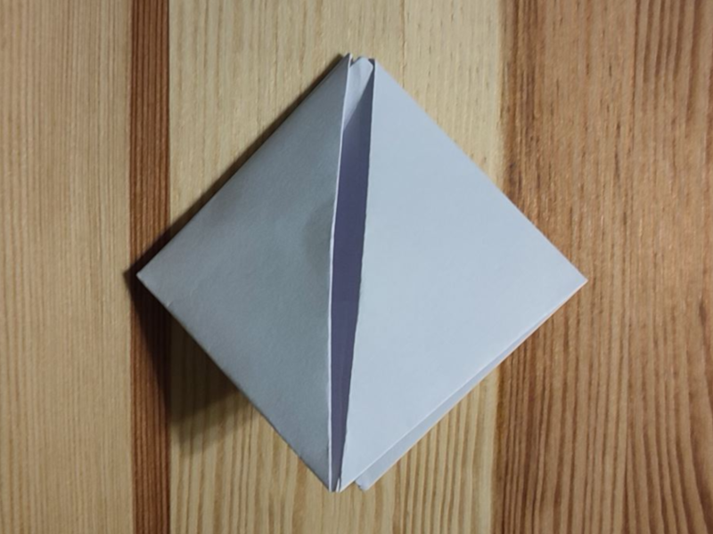
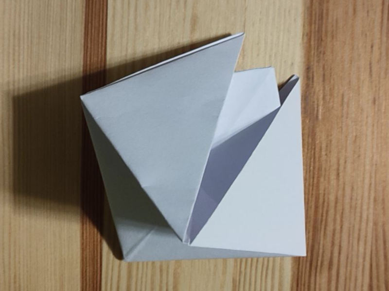
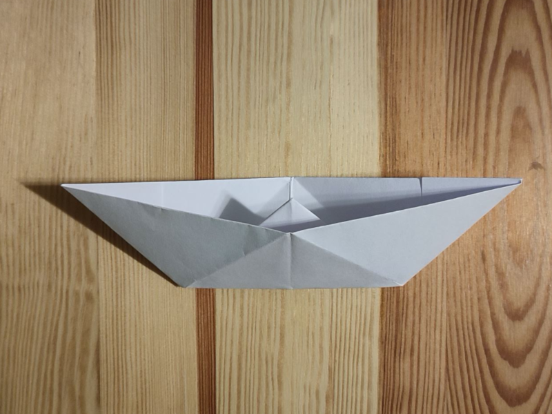

Rozpoczynamy od modelu czako

Ściągamy końce czako do siebie i spłaszczamy do kształtu kwadratu

Zaginamy róg z wierzchniej warstwy do góry

Odwracamy i na drugiej stronie robimy to samo

Końce nowego, mniejszego czako ściągamy do siebie

I spłaszczamy do kształtu kwadratu

Chwytamy za górne rogi

I rozciągamy Łódka jest gotowa!